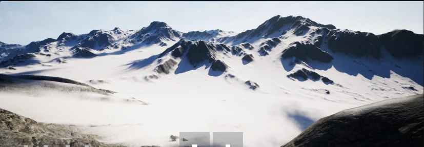
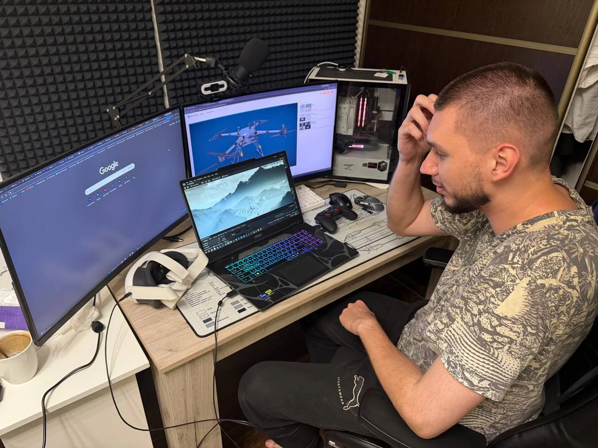

Осваивайте управление
Тренируйте взлёт, маневрирование и прохождение контрольных точек. Выбирайте гоночный, грузовой или разведывательный дрон.

Реалистичная физика полёта, разнообразие ландшафтов и инструменты виртуальных испытаний. Пространство для пилотов, преподавателей и разработчиков.
UAV SIM — программный комплекс для симуляции полётов беспилотных летательных аппаратов. Он объединяет обучение пилотированию, работу с полётными данными и среду для проверки алгоритмов управления.
Тренируйте взлёт, маневрирование и прохождение контрольных точек. Выбирайте гоночный, грузовой или разведывательный дрон.
Собирайте данные об ускорениях, скорости и угловом движении. Сопоставляйте действия оператора с поведением аппарата.
Записывайте траектории и управляющие воздействия для исследований автономного полёта. Модуль автономного управления работает в тестовом режиме.
Снежные хребты, песчаные дюны и вулканические долины. Исследуйте четыре среды и выбирайте условия полёта.
Скалистые массивы, травянистые склоны и объёмный туман. Пространство для тренировки маневрирования в горном рельефе.
СКРИНШОТ СИМУЛЯТОРАВетер, осадки и видимость
настраиваются в симуляторе.
Модель учитывает массу, момент инерции, центровку и аэродинамику. Четыре канала управления: газ, рыскание, тангаж и крен.
Запись линейных ускорений, вектора скорости и угловых скоростей. Данные ИМУ и действия оператора используются для анализа полёта и формирования датасетов.
Проходите маршрут через контрольные ворота и отслеживайте время. Редактор сценариев и миссий позволяет создавать собственные задания.
Исследуйте поведение аппарата при потере связи, отказах управления и сложной погоде. Настройки среды позволяют изменять ветер, осадки и видимость.
Начните с клавиатуры или геймпада, подключите пульт радиоуправления и исследуйте полёт в VR. В проекте протестированы разные варианты периферии.
Управление с пультов FrSky и Radiomaster. Протестированы Radiomaster TX12 MKII и VR-режим с отслеживанием поворотов головы.
Привычные устройства для первых тренировок. Реализована поддержка USB/Bluetooth-контроллеров; в проекте проверена работа с геймпадом DEXP.
UAV SIM разрабатывает ООО «АвиаСим Плюс». Проект посвящён созданию симулятора БПЛА с реалистичной физикой полёта и моделированием окружающей среды.
Наши направления — подготовка операторов, виртуальные испытания и инструменты исследования автономного управления. Следующий шаг — развитие модуля ИИ по мере накопления полётных данных.

Для учебных центров, вузов, пилотов и разработчиков.
Напишите нам о задачах обучения или виртуальных испытаний.
Проект реализован при поддержке Фонда содействия инновациям в рамках программы «Студенческий стартап» мероприятия «Платформа университетского технологического предпринимательства» федерального проекта «Технологии».
Договор № 1014ГССС27/107293 от 16.10.2025